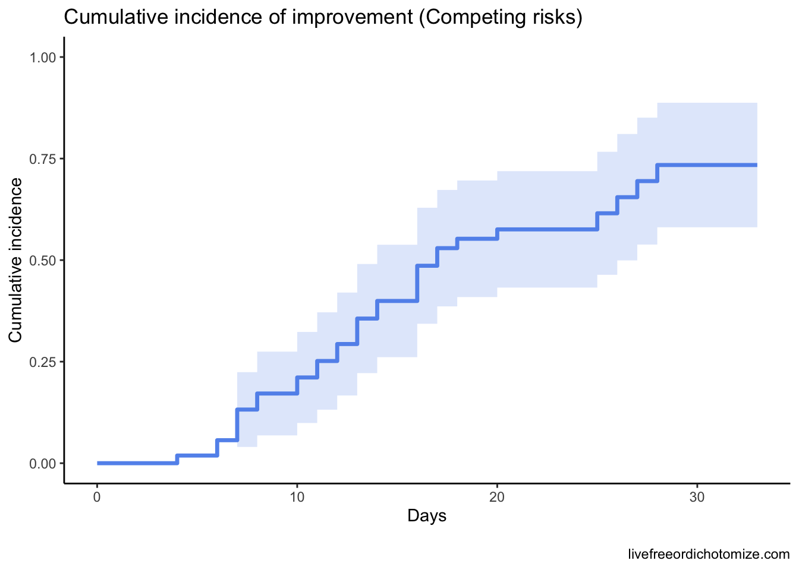
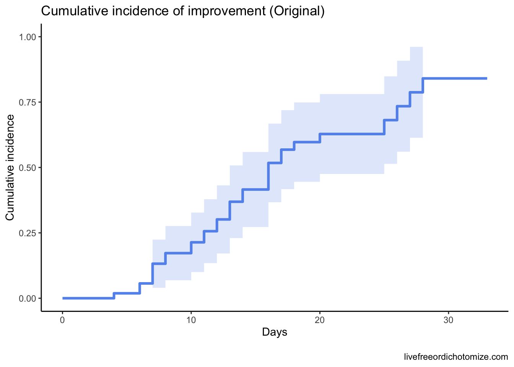
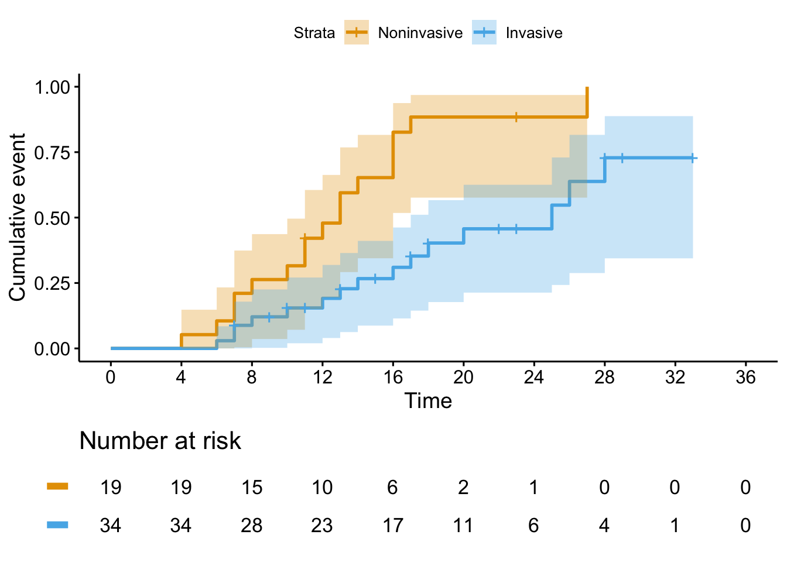
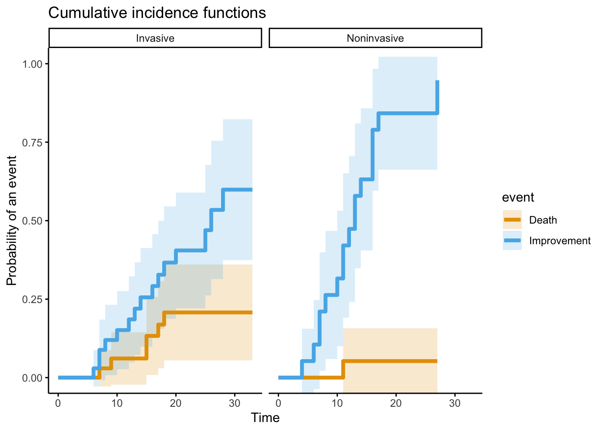
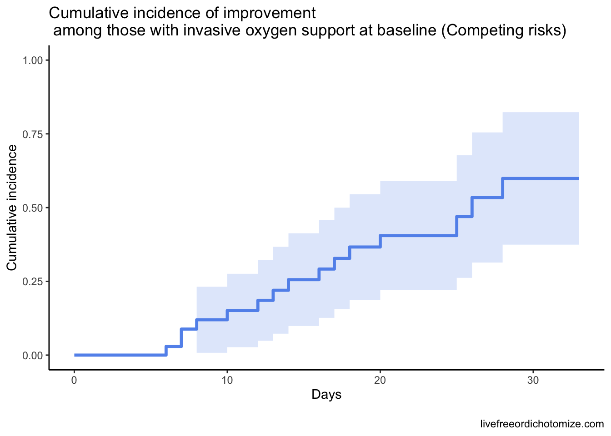
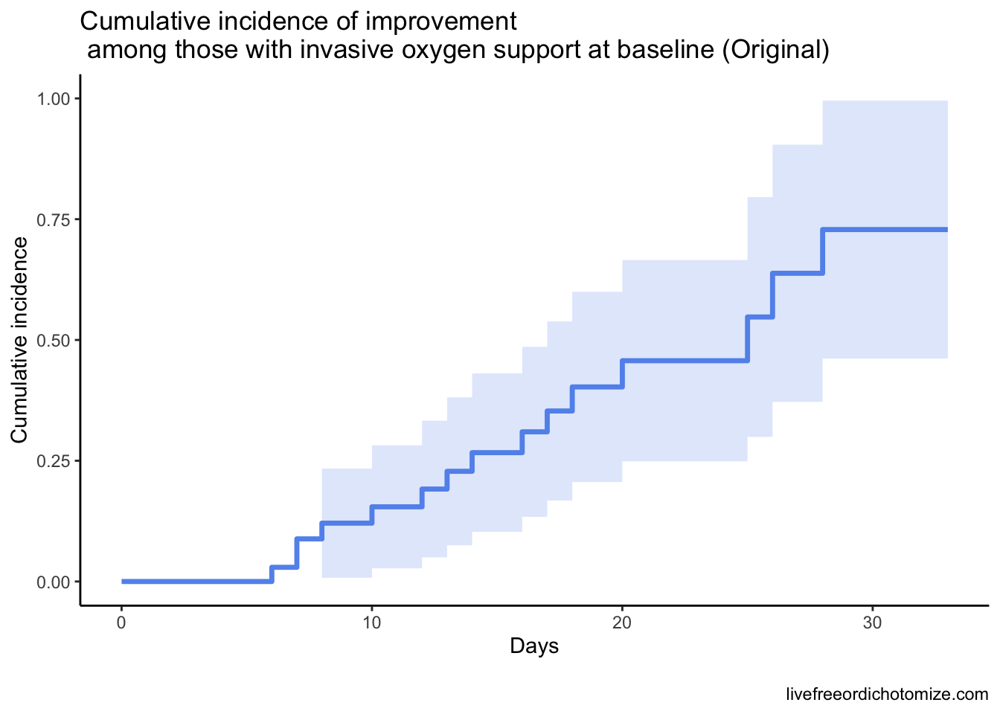

library(tidyverse)
library(survival)
library(survminer)
library(cowplot)
library(cmprsk)
d <- read_csv("https://raw.githubusercontent.com/LucyMcGowan/nejm-grein-reanalysis/master/data/data-fig-2.csv")A paper by Grein et al. was recently published in the New England Journal of Medicine examining a cohort of patients with COVID-19 who were treated with compassionate-use remdesivir. There are two things that were interesting about this paper:
- They had a very neat figure that included tons of information about their cohort
- The primary statistical analysis was not appropriately done
Check out #1 in the Part 1 post. This post focuses on #2, in particular it focuses on competing risks. This criticism was made by Stefanos Bonovas and Daniele Piovani in a letter to the Editor a few days ago.
What is their question?
I believe the authors are interested in telling us about clinical improvement in this cohort of patients taking remdesivir, in particular they want to estimate the cumulative incidence of clinical improvement by 28 days. For the purposes of their analysis “clinical improvement” is defined as being discharged alive or having a decrease of 2 points or more in a 6-level ordinal scale of oxygen support:
- ECMO
- Mechanical ventilation
- NIPPV
- High-flow oxygen
- Low-flow oxygen
- Ambient air
They use a Kaplan Meier plot to show this. Let’s recreate it first.
Recreate their plots
I spent some time trying to recreate their analysis using the data from Figure 2, and I wasn‚Äôt quite about to do it. So I‚Äôve painstakingly pulled every number from Figure 3A üòÖ
fig_3 <- tibble(
time = c(4, 6, 6, 7, 7, 7, 7, 7, 7, 7, 8, 8, 9,
10, 10, 10, 11, 11, 11, 11, 12, 12, 13,
13, 13, 13, 14, 14, 15, 15, 16, 16, 16,
16, 17, 17, 17, 17, 18, 18, 20, 22, 22,
23, 23, 23, 25, 26, 27, 28, 28, 29, 33),
event = c(1, 1, 1, 1, 1, 1, 1, 0, 0, 0, 1, 1, 0,
1, 1, 0, 1, 1, 0, 0, 1, 1, 1, 1, 1, 0,
1, 1, 0, 0, 1, 1, 1, 1, 1, 1, 0, 0, 1,
0, 1, 0, 0, 0, 0, 0, 1, 1, 1, 1, 0, 0,
0)
)s <- survfit(
Surv(time = time, event = event) ~ 1,
data = fig_3
)
ggsurvplot(fit = s,
risk.table = TRUE,
break.time.by = 4,
risk.table.y.text = FALSE,
ylab = "Days",
tables.theme = theme_cleantable(),
fun = "event")Warning in do_once((if (is_R_CMD_check()) stop else warning)("The function
xfun::isFALSE() will be deprecated in the future. Please ", : The function
xfun::isFALSE() will be deprecated in the future. Please consider using
base::isFALSE(x) or identical(x, FALSE) instead.I haven’t quite figured out how to map these back to Figure 2, but it seems it replicates Figure 3A pretty well. Let’s estimate the cumulative incidence at 28 days:
s_df <- tibble(
time = s$time,
cumulative_incidence = 1 - s$surv
)
s_df %>%
filter(time == 28)# A tibble: 1 × 2
time cumulative_incidence
<dbl> <dbl>
1 28 0.841Looks very similar to the 84% reported in the initial paper. Cool, what’s the problem? The idea main idea is to examine time to clinical improvement and assess at 28 days what the cumulative incidence of improvement is. The way a typical survival analysis (like the ones the authors did here) works is typically you follow a group of patients for a certain amount of time. If they have an event (for example in the analysis above if they improve) you record them as such and the time the event occurred, otherwise you censor them and record the final time they were observed. In the figure here we have 33 patients that improved and 20 that were censored. Sounds fine, what’s the problem? A key assumption is that censoring should be “non-informative”, in other words, the patient is followed for a certain amount of time, never has the event, and then is no longer followed. Our best guess is that we know they didn’t have the event up until the last day we saw them, so we censor them on that day. Maybe they’ll have the event the next day, or maybe in a year - in order for the assumptions to be appropriately met, it must be the case that patients who have been censored are just as likely to have the event as those who are still being followed in the study. Let’s pull up Figure 2 again.
7 of the patients in this cohort died. If someone dies we know that they are not going to improve later. This is not non-informative censoring!! Luckily there is a very straightforward way to deal with this in statistics - competing risks!
Competing Risks
In a competing risk analysis, we can separate out the the death outcome from the remaining censored outcomes. We can then appropriately estimate the cumulative incidence of improving. I’ve recoded the 7 deaths (guessed from Figure 2) below.
fig_3_fixed <- tibble(
time = c(4, 6, 6, 7, 7, 7, 7, 7, 7, 7, 8, 8, 9,
10, 10, 10, 11, 11, 11, 11, 12, 12, 13,
13, 13, 13, 14, 14, 15, 15, 16, 16, 16,
16, 17, 17, 17, 17, 18, 18, 20, 22, 22,
23, 23, 23, 25, 26, 27, 28, 28, 29, 33),
event = c(1, 1, 1, 1, 1, 1, 1, 2, 0, 0, 1, 1, 2,
1, 1, 0, 1, 1, 2, 0, 1, 1, 1, 1, 1, 0,
1, 1, 2, 2, 1, 1, 1, 1, 1, 1, 0, 2, 1,
2, 1, 0, 0, 0, 0, 0, 1, 1, 1, 1, 0, 0,
0)
)Interested in learning more about competing risk analyses in R? Emily Zabor has an amazing tutorial on this
Let’s see how the plot looks now.
x <- cuminc(fig_3_fixed$time,
fig_3_fixed$event,
cencode = 0)
ggcompetingrisks(x,
conf.int = TRUE,
gnames = c("Improvement Improvement", "Death Death"),
ggtheme = theme_classic())
Ok, let’s calculate the cumulative incidence now, taking death into account.
x %>%
map_df(`[`, c("time", "est", "var"), .id = "id") %>%
filter(id %in% c("1 1"), time == 28) %>%
slice(2)# A tibble: 1 × 4
id time est var
<chr> <dbl> <dbl> <dbl>
1 1 1 28 0.734 0.00612The estimated cumulative incidence of clinical improvement by day 28 is 73%. Here’s two plots that show the difference.


Why does this matter? It’s crucial that the questions we answer statistically match the ones we are posing in practice. Understanding the underlying assumptions of the models is so important!
Figure 3B
It turns out really this is a story about Figure 3B. Why? Because 6/7 of the patients who died were on invasive oxygen support at baseline, so modeling this correctly has the largest impact on the Invasive line on this plot. Here they were examining the same outcome, stratifying by whether patient had invasive or noninvasive baseline oxygen support.
fig_3_fixed <- tibble(
time = c(4, 6, 6, 7, 7, 7, 7, 7, 7, 7, 8, 8, 9,
10, 10, 10, 11, 11, 11, 11, 12, 12, 13,
13, 13, 13, 14, 14, 15, 15, 16, 16, 16,
16, 17, 17, 17, 17, 18, 18, 20, 22, 22,
23, 23, 23, 25, 26, 27, 28, 28, 29, 33),
event = c(1, 1, 1, 1, 1, 1, 1, 2, 0, 0, 1, 1, 2,
1, 1, 0, 1, 1, 2, 0, 1, 1, 1, 1, 1, 0,
1, 1, 2, 2, 1, 1, 1, 1, 1, 1, 0, 2, 1,
2, 1, 0, 0, 0, 0, 0, 1, 1, 1, 1, 0, 0,
0),
invasive = c(0, 0, 1, 0, 0, 1, 1, 1, 1, 1, 0, 1, 1,
0, 1, 1, 0, 0, 0, 1, 0, 1, 1, 0, 0, 1,
1, 0, 1, 1, 1, 0, 0, 0, 1, 0, 1, 1, 1,
1, 1, 1, 1, 1, 0, 1, 1, 1, 0, 1, 1, 1,
1)
)fit <- survfit(
Surv(time, ifelse(event == 1, 1, 0)) ~ invasive,
data = fig_3_fixed
)
ggsurvplot(
fit = fit,
risk.table = TRUE,
break.time.by = 4,
risk.table.y.text = FALSE,
xlim = c(0, 36),
tables.theme = theme_cleantable(),
conf.int = TRUE,
fun = "event",
legend.labs = c("Noninvasive", "Invasive"))
Now what happens if we do a competing risks model? Let’s see what that looks like now
x <- cuminc(fig_3_fixed$time,
fig_3_fixed$event,
group = fig_3_fixed$invasive,
cencode = 0)ggcompetingrisks(x,
conf.int = TRUE,
gnames = c("Noninvasive Improvement", "Invasive Improvement",
"Noninvasive Death", "Invasive Death"),
ggtheme = theme_classic(),
ylim = c(0, 1))
We wouldn’t expect the Noninvasive group to change much, because only one patient in this stratum died. Let’s focus instead on just the Invasive group to compare how that line changes with a proper analysis.


Basically, all this is to say that a competing risk analysis would have been more appropriate here. Hopefully this code-through has been helpful!